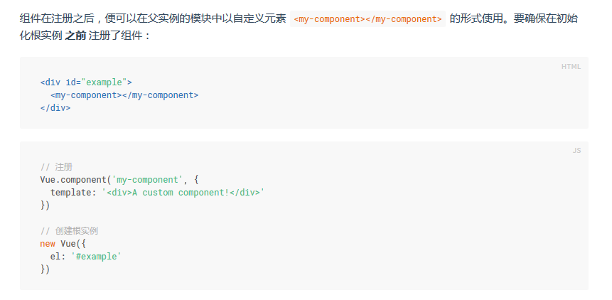

- MVVM
- v-once 使得标签内容加载一次后，不会再随其他修改而修改自身内容。
- {{}}形式不能使用在HTML标签属性中。
- 双大括号会将数据解释为纯文本，而非 HTML 。为了输出真正的 HTML ，你需要使用 v-html 指令。
- 过滤器可以用在两个地方：{{}} 插值和 v-bind 表达式。过滤器应该被添加在 JavaScript 表达式的尾部，由“管道”符 “ | ”指示。
- v-bind:'url' 缩写 :'url' v-on:click 缩写 @click
- 让两个元素是完全独立的，不复用它们，只需添加一个具有唯一值的 key 属性即可，如 key="username-input"。
- 一般来说， v-if 有更高的切换开销，而 v-show 有更高的初始渲染开销。因此，如果需要非常频繁地切换，则使用 v-show 较好；如果在运行时条件不太可能改变，则使用 v-if 较好。
- 当 v-if 与 v-for 一起使用时，v-for 具有比 v-if 更高的优先级。
- 对象迭代v-for 第二个的参数为键名，第三个参数为索引。
- 变异方法：push()pop()shift()unshift()splice()sort()reverse()；重塑数组：filter()concat()slice()
- Vue 不能检测以下变动的数组：
1. 当你利用索引直接设置一个项时，例如： vm.items[indexOfItem] = newValue
为了解决第一类问题，以下两种方式都可以实现和 vm.items[indexOfItem] = newValue 相同的效果， 同时也将触发状态更新：
// Vue.set
Vue.set(example1.items, indexOfItem, newValue)
// Array.prototype.splice`
example1.items.splice(indexOfItem, 1, newValue)
为了解决第二类问题，你也同样可以使用 splice：
example1.items.splice(newLength)
2. 当你修改数组的长度时，例如： vm.items.length = newLength
【组件 注意点】
- 要确保在初始化根实例 之前 注册了组件：

- 构造器也可以传入一个data对象：

【组件】
- 组件中的data 必须是函数。
- 要让子组件使用父组件的数据，我们需要通过子组件的props选项。 props: ['message']。
- HTML 特性是不区分大小写的。所以，当使用的不是字符串模版，camelCased (驼峰式) 命名的 prop 需要转换为相对应的 kebab-case (短横线隔开式) 命名。


【语法】
1.引入模块
import App from './App' //其实是App.vue
var App = require('./App')
2.每个页面结构
<template><script><style>三个部分
3.注册组件
export default {
name: 'app'
}
// 相当于-->
module.export = {}
【特点】
1.热更新 修改文件，页面自动更新修改的内容
【注意】
1.在data选项中，要这么写

【PPT讲解】
**组件要在components中注册后才能使用

**注册一个属性 props:['msg']，可以给属性传值

**注册组件叫aaA，标签使用要用aa-a

**父组件传递子组件数据 用props定义属性

**子组件传递父组件数据
父级监听子级来实现


**组件加载完成后执行的函数（mounted）

**vue-resoucer请求